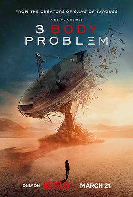
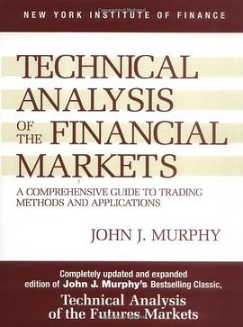
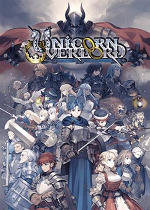
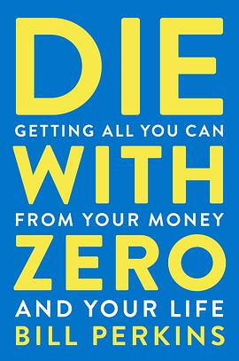

广播
共 152 个月
3405 条广播
其中 2202 条带正文
广播发布后不可编辑，所以每条都是那一刻的原话。
2024-04-13 20:24:39
 看过 辐射 第一季 / Fallout Season 1 ★★★★★
看过 辐射 第一季 / Fallout Season 1 ★★★★★
依然是游戏种草N年，但是新作越来越多就拖延到一部都没有玩过。设定非常吸引人，剧情也很棒， 又开始给我游戏种草了。啥时候才能有时间哦 orz
2024-04-09 19:26:01
 看过 寄生兽：灰色部队 / 기생수: 더 그레이 ★★★★☆
看过 寄生兽：灰色部队 / 기생수: 더 그레이 ★★★★☆
剧情还挺精彩的，节奏也是乃飞一贯的飞快。片尾怎么菅田将晖又来了？？？怎么老是你 //毕竟没看过原作，和想象的不太一样，但是还挺精彩的！目前才看了一集，感觉非寄生兽的打斗戏份还挺多 XD
2024-04-07 19:54:02
 看过 勿言推理 电影版 / ミステリと言う勿れ 劇場版 ★★★★☆
看过 勿言推理 电影版 / ミステリと言う勿れ 劇場版 ★★★★☆
很精彩的剧场版，感觉比连续剧版还精彩。这次依然是探案部分和情感部分双线进行，很多有生活感的台词非常亲切。比如说贯穿全篇的“孩子就像未干的水泥，如果留下了阴影就会伴随一辈子，比如说孩子做了对不起父母的事情，那么孩子一辈子都会懊悔”。其实我就是深有体会，小时候把父亲的金笔带到学校弄丢了，虽然父亲从未提过，我依然时不时会想起这件事懊悔不已。
2024-04-07 19:45:48
在看 寄生兽：灰色部队 / 기생수: 더 그레이 ★★★★☆
毕竟没看过原作，和想象的不太一样，但是还挺精彩的！目前才看了一集，感觉非寄生兽的打斗戏份还挺多 XD
2024-04-07 19:41:16
 想玩 剑星 스텔라 블레이드
想玩 剑星 스텔라 블레이드
2024-04-07 04:10:32
想看 寄生兽：灰色部队 / 기생수: 더 그레이
2024-04-04 20:18:47
 看过 单身即地狱 第三季 / 솔로지옥 시즌3 ★★★☆☆
看过 单身即地狱 第三季 / 솔로지옥 시즌3 ★★★☆☆
这次花样变得有点多，但是男主这个光环实在是有点强，一整季都是他的剧情，从第一集贯穿到最后一集，真是阿西。6个女嘉宾感觉只有女6不是狠人 XD 其他的有点凶
2024-04-01 17:06:42
 想看 哥斯拉大战金刚2：帝国崛起 / Godzilla x Kong: The New Empire
想看 哥斯拉大战金刚2：帝国崛起 / Godzilla x Kong: The New Empire
最近在上映
2024-04-01 17:05:58
 看过 功夫熊猫4 / Kung Fu Panda 4 ★★★★☆
看过 功夫熊猫4 / Kung Fu Panda 4 ★★★★☆
这次剧情有点简单，长度也有点让人失望。虽然设定还可以笑点也挺足的。比较有印象的：阿宝感叹城市节奏快；inner peace -> dinner please -> dinner with peas。
2024-04-01 17:01:03
 看过 灌篮高手 / The First Slam Dunk ★★★★☆
看过 灌篮高手 / The First Slam Dunk ★★★★☆
等资源一晃等了一年多了，看到3D建模的灌篮高手感到格外新奇，开始感觉一般，但是看着看着逐渐找到了童年的感觉，果然还是打篮球部分精彩啊。但是我的晴子线一点点都没有发展 QAQ 片尾彩蛋似乎没有明确去美国打联赛的是哥哥还是弟弟，不过从动作上来说貌似是弟弟，所以哥哥真就把弟弟领进门就没了？
2024-03-29 10:34:53
看过 周处除三害 / 周處除三害 ★★★★☆
剧情基本上都在预料之中，但是导演这么一拍，还挺精彩
2024-03-26 15:20:51
 看过 The Space Shuttle That Fell to Earth ★★★★☆
看过 The Space Shuttle That Fell to Earth ★★★★☆
太空任务失败后花了8个月调查原因，最后发现是经典的无奈 - 在那个时间、环境下必然会产生这样的失败。叙事做的挺好的，但是没有采访到顶层领导 Linda 其实有点blame她的感觉。情绪渲染得很好，但是也难逃官话套话场面话，因此减一星。
2024-03-25 06:44:45
看过 葬送的芙莉莲 / 葬送のフリーレン ★★★★★
真的黑马，好久没看过这么畅快淋漓的动画了。虽然和同期的《迷宫饭》队伍构成一样（精灵、矮人、战士），但是看起来感受完全不一样。十分期待第二季。 //好精彩啊，才看了3集却感觉已经看了一般动画一季的内容。 Evan Call的音乐也是非常棒，有紫罗兰的感觉 //这么高分 :o
2024-03-24 14:58:08

看过 三体 第一季 / 3 Body Problem Season 1 ★★★★★
我非小说原作粉，因为之前看过了国内电视剧版，所以剧情不是那么地惊艳了，但是原作的设定实在是太超前了，必须得满分。剧情节奏上导演真是不愿意浪费一分钟啊，信息量巨大，错过了任何一分钟都会有跟不上的细节。画面和音乐自然不必说，开头LOGO 10秒钟的音乐简直西部世界。期待第二季，任意版都行！
2024-03-22 18:55:44
想看 香格里拉·开拓异境～粪作猎手挑战神作～ / シャングリラ・フロンティア ~クソゲーハンター、神ゲーに挑まんとす~
2024-03-17 21:16:40
想看 周处除三害 / 周處除三害
2024-03-16 16:54:37
在看 葬送的芙莉莲 / 葬送のフリーレン ★★★★★
好精彩啊，才看了3集却感觉已经看了一半动画一季的内容。 Evan Call的音乐也是非常棒，有紫罗兰的感觉 //这么高分 :o
2024-03-15 18:31:30

想读 Technical Analysis of the Financial Markets
2024-03-15 13:28:27

想玩 圣兽之王 ユニコーンオーバーロード
2024-03-12 16:42:37
 想看 间谍过家家 代号：白 / 劇場版 Spy x Family Code: White
想看 间谍过家家 代号：白 / 劇場版 Spy x Family Code: White
2024-03-12 16:41:16
 想看 间谍过家家 第三季 / SPY×FAMILY Season 3
想看 间谍过家家 第三季 / SPY×FAMILY Season 3
2024-03-12 16:37:01
 看过 间谍过家家 第二季 / SPY×FAMILY Season 2 ★★★★☆
看过 间谍过家家 第二季 / SPY×FAMILY Season 2 ★★★★☆
去年看完忘标记了，依然是泡面番，一整季一个星都没拿，别忘了主线啊喂
2024-03-10 17:48:27
 在看 迷宫饭 / ダンジョン飯 ★★★★☆
在看 迷宫饭 / ダンジョン飯 ★★★★☆
又名舌尖上的地下城，当之无愧
2024-03-09 15:33:30
想看 迷宫饭 / ダンジョン飯
2024-03-07 21:09:47
 看过 孤注一掷 ★★★★☆
看过 孤注一掷 ★★★★☆
把很多诈骗的肉眼可见的现象都从内部角度演绎了出来，算是挺不错的创新。剧情比较散，演技也一般，算是猎奇向所以给了4星。
2024-03-03 20:31:32
 看过 沙丘2 / Dune: Part Two ★★★★☆
看过 沙丘2 / Dune: Part Two ★★★★☆
极限操作，买到了今天最后两张IMAX票，位置竟然还行！画面没的说，很细腻而且很大，坐在最后一排依然大到需要扭头。剧情很精彩，然而进展飞速，几句台词没听懂就跟不上了，回头还是要看看影评和剧情解析~
2024-03-03 14:30:24

想读 Die with Zero
2024-03-03 07:23:34
想看 百元之恋 / 百円の恋
2024-02-24 14:10:40
想看 The Space Shuttle That Fell to Earth
2024-02-22 12:32:04
想看 不合适也要有个限度！ / 不適切にもほどがある！
2024-02-18 22:38:00
在读 思考致富 ★★★★★
回国前读了一点这个，就开头而言已经醍醐灌顶了
2024-02-18 22:23:17
想读 富爸爸财务自由之路
有时间的话再考虑读，after 《思考致富》
2024-02-18 22:22:30
想读 富爸爸第二次致富机会
有时间的话再考虑读，after 《思考致富》
2024-02-18 21:52:41
在读 投资最重要的事
现在开始读这个
2024-02-18 21:48:15
 读过 富爸爸穷爸爸 ★★★★★
读过 富爸爸穷爸爸 ★★★★★
看完后感觉思路被打开了，确实没有用负债和现金流去评价每一项交易。这么算起来，其实自己确实应该抛掉一些负债。非常值得二刷的书。 //书确实都涨价了喔，但是还是比英文版便宜。。看的是89元版。
2024-02-17 06:50:49
想看 小姐好白 / White Chicks
xhs推荐
2024-02-11 15:41:54
想读 富爸爸如何创办自己的公司
富爸爸穷爸爸里面提到的
2024-02-07 21:29:30
想读 富爸爸为什么富人越来越富
2024-02-06 09:53:07
想看 葬送的芙莉莲 / 葬送のフリーレン
这么高分 :o
2024-02-06 09:52:27
想玩 女神异闻录3 Reload ペルソナ３ リロード
2024-02-05 23:02:22
 想看 人间世·抗疫特别节目
想看 人间世·抗疫特别节目
2024-02-05 22:55:36
 看过 人间世 ★★★★☆
看过 人间世 ★★★★☆
依然是在飞机上，不知为啥点开的都是这个类型的电影。这个系列我也是久闻未看，在飞机上看到了就直接加入想看列表了。医疗真的是人类生命的最终归宿，贵不说，很多疾病能不能治好都不是很确定。我十分敬佩医生，无奈智商不够，无法成为医生。自己一定要锻炼好身体，家人也一样。作为独生子女，希望父母能顺利移居澳洲，这样医疗福利算是我目前能做到的最好的关照了（除非暴富）。
2024-02-05 22:48:45
 看过 滚蛋吧！肿瘤君 ★★★★☆
看过 滚蛋吧！肿瘤君 ★★★★☆
依然是回国的飞机上看的。大学的时候很火的电影，somehow我就是一直都没有看。看完感觉乐观真好啊。编剧也没有给我们都想要的大团圆结局，但是活着真好，有一群愿意一起剃光头的朋友更好。可惜这样的事情只存在于电影里。
2024-02-05 22:43:20
 看过 喜羊羊与灰太狼之筐出未来 ★★☆☆☆
看过 喜羊羊与灰太狼之筐出未来 ★★☆☆☆
在回国的飞机上看的，开局就让我很懵，因为我不知道为啥羊和狼一起打篮球了，至少不应该在一个队吧。看着看着，感觉节奏很慢，已经不适合我这样2倍速看视频的老人了，于是快进快进看到结尾。结尾确实也不出所料，羊村险胜。本来想给1星，但是鉴于听到了主题曲的变奏，加1星致敬。
2024-02-05 22:35:50
在读 富爸爸穷爸爸
书确实都涨价了喔，但是还是比英文版便宜。。看的是89元版。
2024-02-05 22:29:24
 读过 富爸爸巴比伦最富有的人 ★★★★☆
读过 富爸爸巴比伦最富有的人 ★★★★☆
算是理财入门书，可以让孩子读的那种。按照古人的方法做在信息如此发达的今天已经很难大富大贵，但是过得体面还是不难的。摘抄自‘天见眼开’的总结：攒钱（每个月攒下收入的十分之一）、节俭（减少不必要的开销）、投资（根据有效、准确的判断去投资，让钱生钱）、坚韧（持之以恒、日拱一卒）、保险（要留出保障最低生活的积蓄）、偿债（承认债务、分期归还，取得双赢）、勤奋（努力工作，积攒本金）。另外，遇到贵人的话，该抄的作业还是要抄。
2024-02-03 18:40:04
 想读 南渡北归
想读 南渡北归
2024-02-02 17:23:29
 看过 卡壳 ★★☆☆☆
看过 卡壳 ★★☆☆☆
机顶盒里面找的喜剧，出来之后只有两个冷笑话比较搞笑。剧情没头没尾的，看到最后人名我还是没记全。
2024-01-31 19:31:14
 看过 年会不能停！ ★★★★☆
看过 年会不能停！ ★★★★☆
裁员季很惊喜的喜剧，尤其是看到大鹏以及一年一度喜剧大会上的人大多在这里面，很多梗都很现实，当然作为打工者也是很无奈。
2024-01-21 14:26:54
 看过 功夫 ★★★★★
看过 功夫 ★★★★★
很久很久以前，在合肥的光明影都看过（如今已经不存在了），当时大受震撼。凭记忆给5星。
2024-01-21 14:25:30
 想看 喜剧之王 / 喜劇之王
想看 喜剧之王 / 喜劇之王
2024-01-21 14:25:06
 想看 新喜剧之王
想看 新喜剧之王
2024-01-21 14:16:59
 想看 飞驰人生2
想看 飞驰人生2
2024-01-21 14:15:35
 看过 四海 ★★☆☆☆
看过 四海 ★★☆☆☆
好像我关注的几条线都留白了，男女主线、飞车线、警贷线。。。所以看完之后这个电影他说了个啥故事？？又是个《后会无期》的故事？
2024-01-20 19:41:08
 看过 热血警探 / Hot Fuzz ★★★★☆
看过 热血警探 / Hot Fuzz ★★★★☆
剧情发展只能用一个离谱形容，但是还是挺搞笑的，浓浓的英式风味。
2024-01-20 15:38:00
 想看 繁花
想看 繁花
2024-01-19 19:17:46
 玩过 刺客信条：幻景 Assassin’s Creed Mirage ★★★★☆
玩过 刺客信条：幻景 Assassin’s Creed Mirage ★★★★☆
下周要回国了，没时间玩完这款游戏了，这代流水线就这样吧，下次AC Red再好好打 :-) 质量还是不错的。 //这次年货回归了初代的操作，感觉竟然有些不习惯，这次继续ubi+免费玩
2024-01-19 16:06:58
 想看 缩小人生 / Downsizing
想看 缩小人生 / Downsizing
2024-01-17 16:37:31
 想看 僵尸肖恩 / Shaun of the Dead
想看 僵尸肖恩 / Shaun of the Dead
2024-01-17 16:36:01
想看 热血警探 / Hot Fuzz
2024-01-14 21:44:49
 想看 头脑特工队 / Inside Out
想看 头脑特工队 / Inside Out
一直拖了好久，2都要出来了，这个还没看
2024-01-14 21:43:41
 看过 疯狂元素城 / Elemental ★★★★★
看过 疯狂元素城 / Elemental ★★★★★
非常脑洞大开的设定，很多惊喜的小创意，比如说Fire的first-aid kit是木头，连片尾字幕都是满满的小设计，非常用心！剧情依然是中规中矩的迪士尼/皮克斯风格，我很吃这一套，最后的鞠躬甚至有点泪目。看完之后又看了幕后花絮，原来America-Born-Korean导演的一生都是这部作品的灵感啊，respect，和之前得Turning Red很类似。主题曲音乐不知为啥非常耳熟，可能是我电影看得太晚了。总之十分推荐！
2024-01-14 08:24:41
在玩 刺客信条：幻景 Assassin’s Creed Mirage
这次年货回归了初代的操作，感觉竟然有些不习惯，这次继续ubi+免费玩
2024-01-13 09:05:07
 在看 地球脉动 第一季 / Planet Earth Season 1 ★★★★★
在看 地球脉动 第一季 / Planet Earth Season 1 ★★★★★
最开始是从一个油管的官方第三季幕后花絮点进来的，说的是BBC为了拍Archer Fish的画面在某个沼泽地带蹲了5周。现在从第一季开始补，没想到2006年拍到的画面的震撼度不亚于现在的4k纪录片。第一集就告诉观众了，这个片儿里面的画面只拍人迹罕至地区的景观，直至今天他们依然是人迹罕至的地区，非常珍贵的画面啊。
2024-01-12 20:08:45
 看过 无名 ★★★☆☆
看过 无名 ★★★☆☆
嗯，以后一定要相信豆瓣评分。剧情平平无奇，甚至还有些不合理，全靠猎奇和混剪弄得这么长。全片随时都可以睡觉，不影响后面剧情理解。anyway总算可以删文件了。
2024-01-12 14:45:11
 想看 地球脉动 第三季 / Planet Earth Season 3
想看 地球脉动 第三季 / Planet Earth Season 3
wow 出了啊，我前两季还没看完
2024-01-07 18:15:30
 看过 以爱为营 ★★★☆☆
看过 以爱为营 ★★★☆☆
编剧只有一条线写的不是那么离谱，那就是小月线，这也是为啥多给了一星。其他线都是凑时间、强行塞人、强行拉时间，完全可以去掉大部分内容。剧情也没什么反转，全是意料之中，不是意料之中的就是刚刚说的瞎编剧情，太不合理了。大部分时候听了上句就知道下句是什么。看到这个场景就知道手机要响+打断目前的事情。anyway 致我逝去的双休日
2024-01-07 16:05:40
 玩过 阿凡达：潘多拉边境 Avatar: Frontiers of Pandora ★★★☆☆
玩过 阿凡达：潘多拉边境 Avatar: Frontiers of Pandora ★★★☆☆
UbiPlus 玩了几个小时，卡关了 =，= bug没有遇到很多，但是任务引导真的是非常不行。虽然说是个新IP可以理解，但是每次做任务要摇头晃脑地找地方太怪了。然后很多任务完全不知道怎么下手，部落各种迷路。从来没有遇到这样的开放世界 orz // 阿育竟然拿到版权了
2024-01-06 07:36:18
 想读 有钱人和你想的不一样
想读 有钱人和你想的不一样
2024-01-03 21:26:37
 看过 一一 ★★★★☆
看过 一一 ★★★★☆
《当家常事被拍成电影》。电影里各个人生阶段的人都凑齐了，还是在一个比较富裕但又不是特富裕的家庭里。我的阶段可能目前还夹在中间。影片里小男孩洋洋是个很让人印象深刻的角色，非常有洞察力，父母应该好好栽培才是。后来又看了《Live.from YiYi Premiere in TW》，是电影制成17年后在台湾首次上映的纪录短片，可惜杨导那时已经去世多年。可以看得出这部电影的影响力多么之大以及导演多么之用心。这部电影可能确实需要更多时间去消化，多年后应该再看一下。
2024-01-01 08:56:18
 在看 只有吉祥寺是想住的街道吗？ / 吉祥寺だけが住みたい街ですか？
在看 只有吉祥寺是想住的街道吗？ / 吉祥寺だけが住みたい街ですか？
开始看了，想起来是Aimyon的主题曲，看了才发现是房产中介的剧 LOL 《安家》既视感。 //又来了，先听歌再马克剧
2024-01-01 08:37:33
 看过 月刊少女野崎君 / 月刊少女野崎くん ★★★★☆
看过 月刊少女野崎君 / 月刊少女野崎くん ★★★★☆
拖了很久，终于想起来补掉了。女主声音好熟悉，甚至十分有梨花酱的感觉。本社畜大叔看了依然觉得少女心赛高 _(:з)∠)_ 扣一星因为末尾没有cp没有happy ending